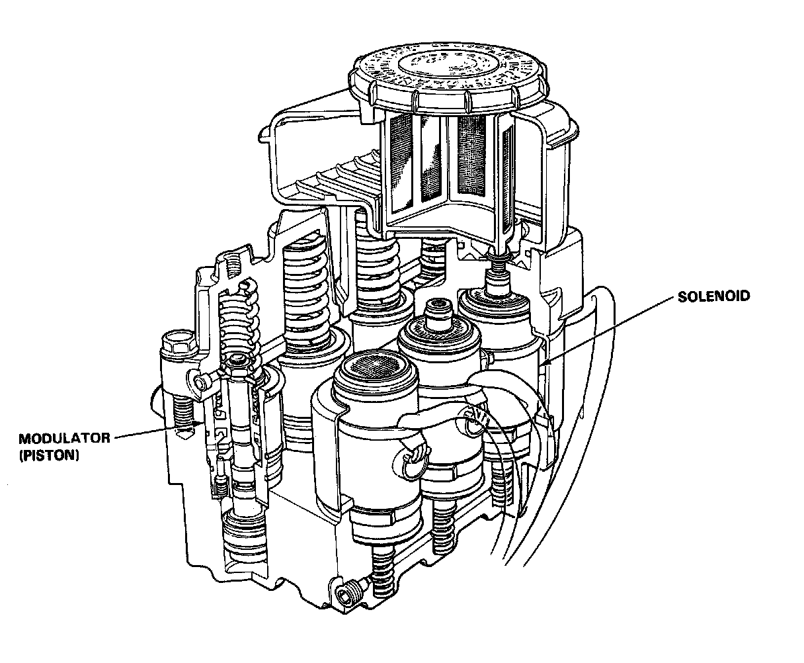
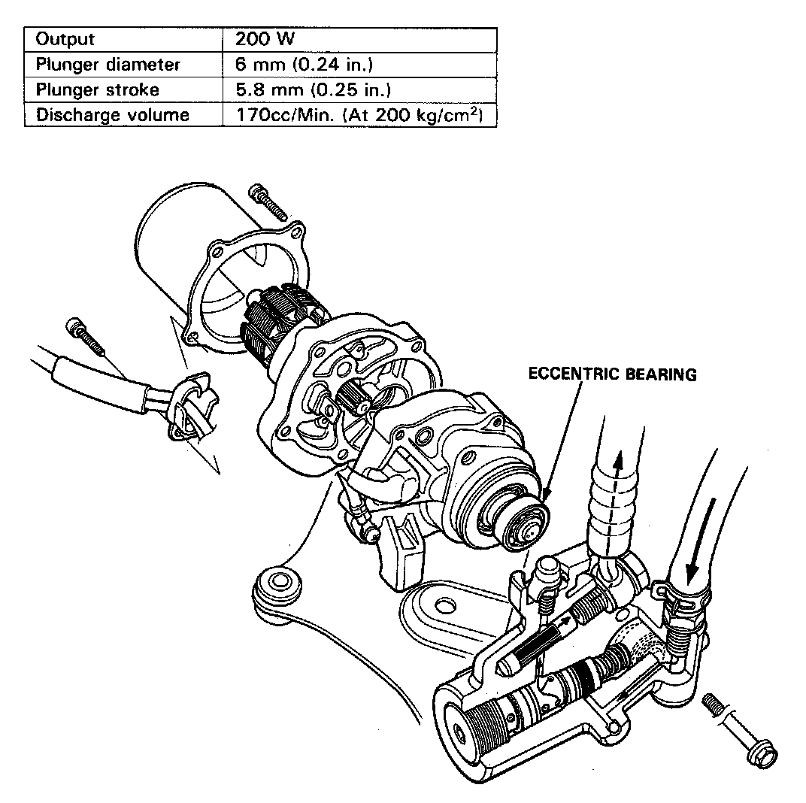

Hydraulic Control Assembly - Antilock Brakes: Description and Operation
Construction

The modulator unit is composed of four modulators and three solenoid valves. The front wheels are controlled individually and the rear wheels are controlled together.
The Power Unit

The power unit is composed of a motor and a plunger-type pump. This unit transmits the revolution of the motor to the plunger by way of an eccentric bearing and supplies high-pressure brake fluid to the accumulator by the effect of the reciprocating movement of the plunger.
When the pressure in the accumulator drops below the prescribed pressure level, the pressure switch gives an OFF signal. The control unit turns the motor relay ON to start the operation of the pump, upon the reception of this signal and a signal from the wheel sensor that the vehicle is running at a speed greater than 10 km/h. When the pressure in the accumulator attains the prescribed pressure, the control unit turns the motor relay OFF approximately three seconds after the unit receives an ON-signal from the pressure switch. By this, the pressure in the accumulator is maintained at 230 kg/cm2.
The control unit turns the pump off and lights the ANTI LOCK warning light if the accumulator pressure does not reach the prescribed level after the pump has run continuously for 120 seconds.